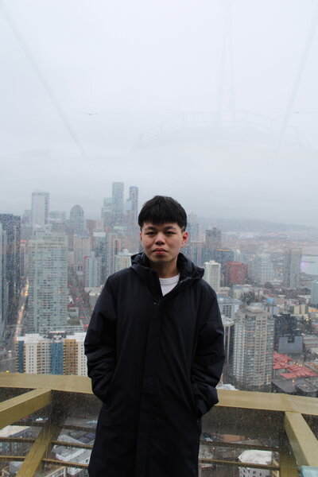
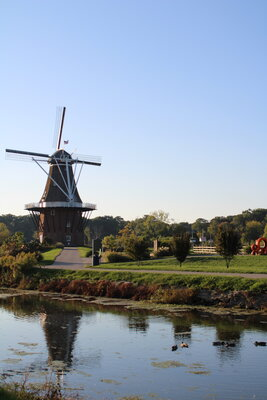

Kha Le
Crawfordsville, Indiana, USA
Mathematics & Neuroscience · Computational Modeling · Decision-Making Research
I am a senior at Wabash College pursuing a B.A. in Mathematics with a concentration in Neuroscience. My research sits at the intersection of computational modeling, decision-making, and motor control — investigating how the brain deliberates and commits to action under uncertainty.

News
| Date | Description |
|---|---|
| May 31, 2025 | Join Cashaback's Lab at University of Delaware as a Visiting Student |
| Jan 7, 2025 | Attend UCL as an Affiliate Student of Applied Mathematics |
Selected Publications
My Recent Journey

